Pioneering the Future of Maritime Intelligence
We deliver integrated hardware, software, and services for the comprehensive maritime domain.
Highlights

Survey & Monitoring Platforms
Developing robust platforms like our custom Buoys for efficient and safe remote data collection in marine environments.
Explore Platforms
Survey & Monitoring Softwares
Our real-time, instrument-independent TEMS data platform for integrated environmental monitoring.
Explore Softwares
Environmental Surveying & Monitoring Services
A landmark project providing a turnkey solution for the complete hydrographic survey of Dubai's territorial waters.
View Services
Ongoing Product Development
Ongoing development of Uncrewed Surface Vessels (USV) applying AI and machine learning for autonomous operations.
Explore DevelopmentsLatest News
What Our Clients Say
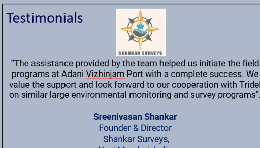
"The assistance provided by the team helped us initiate the field programs at Adani Vizhinjam Port with a complete success. We value the support and look forward to our cooperation with Tridel on similar large environmental monitoring and survey programs."
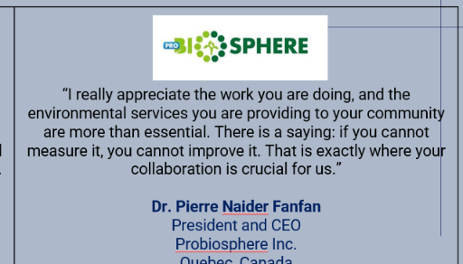
"I really appreciate the work you are doing, and the environmental services you are providing to your community are more than essential. There is a saying: if you cannot measure it, you cannot improve it. That is exactly where your collaboration is crucial for us."
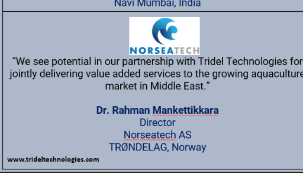
"We see potential in our partnership with Tridel Technologies for jointly delivering value added services to the growing aquaculture market in Middle East."
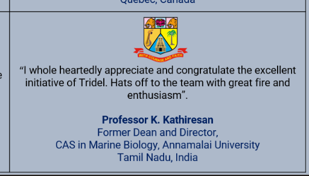
"I whole heartedly appreciate and congratulate the excellent initiative of Tridel. Hats off to the team with great fire and enthusiasm."
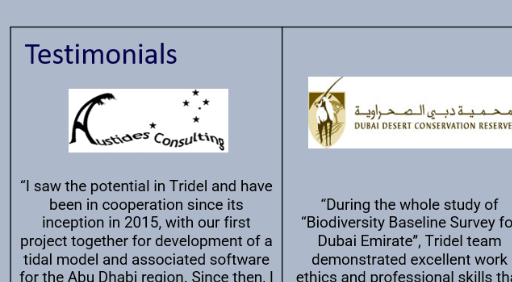
"I saw the potential in Tridel and have been in cooperation since its inception in 2015... I have witnessed the growth of Tridel, which I attribute to the hard work of its dynamic team, as well as to the vision of its leadership. Keep up the great work."
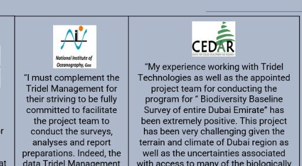
"During the whole study of 'Biodiversity Baseline Survey for Dubai Emirate', Tridel team demonstrated excellent work ethics and professional skills that supported the research activities."
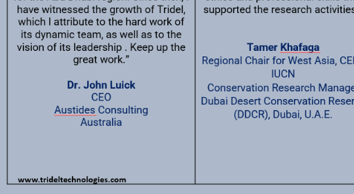
"I must complement the Tridel Management for their striving to be fully committed to facilitate the project team to conduct the surveys, analyses and report preparations... the best asset created for Dubai Municipality."
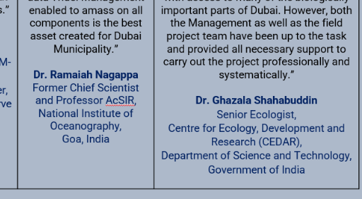
"My experience working with Tridel Technologies as well as the appointed project team... has been extremely positive. This project has been very challenging... However, both the Management as well as the field project team have been up to the task."
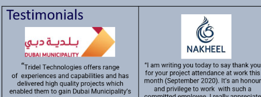
"Tridel Technologies offers range of experiences and capabilities and has delivered high quality projects which enabled them to gain Dubai Municipality’s trust. In addition to the exceptional communication and support, Tridel Technologies offers a wide range of technological advancements."
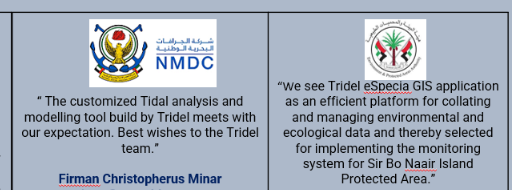
"I am writing you today to say thank you for your project attendance at work... I really appreciate the efforts of your team members, who have worked day and night to make our valuable tenants happy. Thank you for all that you do for Palm Jumeirah."
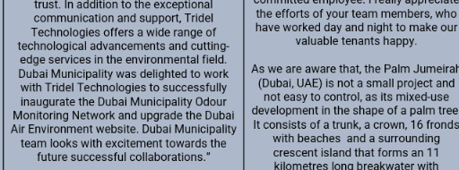
"The customized Tidal analysis and modelling tool build by Tridel meets with our expectation. Best wishes to the Tridel team."
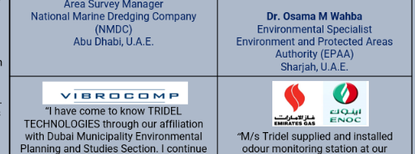
"we see Tridel eSpecia GIS application as an efficient platform for collating and managing environmental and ecological data and thereby selected for implementing the monitoring system for Sir Bo Naair Island Protected Area."
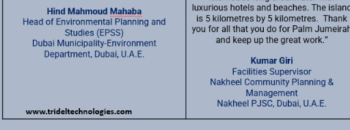
"I have come to know TRIDEL TECHNOLOGIES through our affiliation with Dubai Municipality... I continue to be impressed with their skills and professionalism. Our collaboration has always been smooth and very effective."
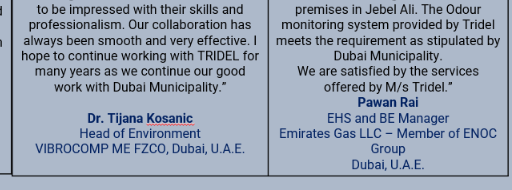
"M/s Tridel supplied and installed odour monitoring station at our premises in Jebel Ali... We are satisfied by the services offered by M/s Tridel."
Our Clients & Partners


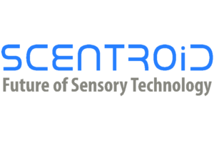
Our Global Presence
Our Offices
UAE
Tridel Technologies FZCO, QD01, DAFZA Industrial Park, Qusais, Dubai, UAE
India
Registered Office (Chennai)
Tridel Technologies Pvt Ltd
No 10/1, 2nd Street, Thirumurugan Nagar,
Arcot Road, Porur, Chennai, TN 600116
Factory Address (Vadodara)
Tridel Technologies Pvt Ltd
Block No. 680 / Plot No. 2, Shah Industrial Estate-2,
Lamdapura Road, Manjusar, Savli,
Vadodara, Gujarat – 390025
Office Address (Vadodara)
Tridel Technologies Pvt Ltd
76, Swaminarayan Nagar, Nizampura,
Vadodara, Gujarat – 390002
Australia
Tridel Technologies Pty Ltd
Eden Hills, Adelaide, SA